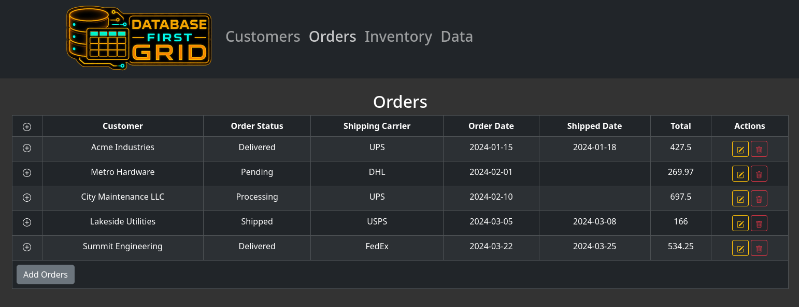

DBFirstDataGrid
Full-stack equipment management dashboard with a database-driven data grid

Orders ScreenshotOverview
A React + Express equipment management dashboard where the UI is driven entirely by database schema metadata. The server inspects each table's columns at runtime and returns typed field descriptors — the frontend then builds table headers, form inputs, and dropdown lists without any hardcoded field knowledge.
Supports nested subgrids (e.g. order items inside orders), paginated data fetching, and an add-record modal. Switchable between SQLite for local development and MySQL for production.
Stack
Challenges
- Safely exposing arbitrary table columns to the frontend without enabling SQL injection required strict allowlisting and regex validation at the server boundary.
- Building recursive subgrids (orders → order items) from generic metadata meant the component needed to handle unknown nesting depth without hardcoded assumptions.
- Keeping SQLite and MySQL behaviours compatible across dev and prod required careful abstraction of dialect differences in the query layer.
- Writing meaningful tests against a live database without flaky state required isolating each suite with an in-memory SQLite instance seeded per run.
Learnings
- Schema-driven UI is powerful but requires a well-defined contract between server and client — ambiguous column names produce confusing UI without clear naming conventions.
- SQL injection prevention at the framework level still requires explicit allowlisting for dynamic identifiers like column and table names; parameterised queries alone are not enough there.
- In-memory SQLite for test isolation is fast and reliable but needs schema parity with the production database to catch real migration issues.
- Containerising both SQLite and MySQL environments early eliminated environment-specific bugs that would otherwise surface only in production.
Key Features
- Schema-driven UI — field types, dropdowns, and labels inferred from column names
- Recursive subgrids for relational data (orders → order items)
- SQL injection prevention via strict allowlist and regex validation
- Podman Compose for containerised dev and test environments
- Server + frontend test suites with in-memory SQLite for isolation
API
- GET /fetch — paginated rows
- GET /fetchFields — column metadata
- GET /fetchDistinct — distinct values
- PUT /add — insert row
- PATCH /update — update row
- DELETE /delete — delete row